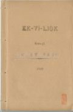

Languages
台文
｜
中文
｜
日本語
｜
English
字體
小
｜
中
｜
大
首頁
/
白話字數位典藏
白話字數位典藏全文檢索
查詢模式
選擇年代
清國時代(1885-1895)
日本時代(1895-1945)
戰後(1945-1969)
1885-1895
1896-1905
1906-1915
1916-1925
1926-1935
1936-1945
1946-1955
1956-1965
1966-1969
1970-1980
1980-1990
1990-2000
2000-2010
2010-
選擇文類
詩
散文
小說
戲劇
傳記
選擇作者
陳清忠
陳清義
編輯部
柯設偕
吳天命
明有德
偕叡廉
周天來
劉華義
王守勇
林茂生
陳添旺
王占魁
柯維思
賴仁聲
陳瓊琚
雪峰逸嵐
吳清鎰
郭水龍
蕭樂善
許水露
葉金木
陳金然
章王由
廖得
鄭連坤
潘道榮
楊士養
梁秀德
劉約翰
周淑慧
高金聲
林燕臣
黃六點
蔡愛義
許有才
主筆
巴克禮
陳鳩水
郭朝成
張基全
陳明清
陳能通
拾穗生
顏振聲
卓恆利
傳道局
胡文池
劉主安
鄭兒玉
林清潔
其他
Google Search
Yahoo Search
全部
刊名
標題
標題(教羅)
全文
全文(教羅)
作者
第37頁，共41頁(共813筆資料) 0.62885093688965sec
1
...
35
36
37
38
39
...
41
To Page
GO
文字列表
圖文列表
排序
日期
文類
刊名
作者
影像
[1934-12 台灣教會公報 文類-散文 作者--/-]
大內教會 [ Toā-lāi Kàu-hoē ]
大內教會 1934.12，no.597，pp.17-18 內庄的人不止欣慕道理，一般的人真有理解。現時咱的說教所是對組合長楊雲祥先生，無料借咱用；也女傳道的宿舍也是對厝主林清中君無料借咱用，實在著大大感謝天爸佮共in二位說謝。 現在每禮拜的出席有40外名；佇麾下中有請神學生將Bō͘-sêng君佮吳德元君來做工，開夏期學校，每日倚50个囡仔來讀冊，成績不止好。 對10月23到25號，佇市場邊有開佈道會，庄民真贊助，不止肅靜來聽，雖然是到尾，猶有50外人teh聽。這幫佇大內方面佈道3暗，講5回，聽眾有530个。 這幫的佈道會，有受著楊雲祥先生，陳金榜先生佮郭天恩先生，in...
[1928-1 台灣教會報 文類-小說 作者--/-]
農夫掠著鶴 [ Lông-hu Lia̍h-tio̍h Ho̍h ]
農夫掠著鶴 1928.01.01 514卷p.6 早時希臘國有一個故事，論莫濫交歹名聲的飛鳥。 有一個作田人看白鴒鷥，暗光鳥，彼號的鳥不時來食伊的五穀就張網來掠。捌一日佇所掠著的中間有一隻白鶴。其餘的鳥無啼無哭：算所拄著的是平常的事。毋kú彼隻鶴哀怨淒慘，對田主求命。 鶴排列伊的情理，講伊毋是白鴒鷥，也毋是暗光鳥，獨獨是通可憐的鶴nā-tiāⁿ。伊講起伊的有孝，講伊盡囝的本份款待父母：in老的時伊飼in；設使in欲別tè去，伊就予in坐伊的尻脊頂飛去所愛到的所在。作田人應伊，講，「你所講kiám-chhái攏是有影；毋kú我掠著你是歹鳥的中間，teh佮in相佮偷食我的五穀，...
[1928-3 台灣教會報 文類-小說 作者--/-]
現代但以理 [ Hiān-tāi Tàn-í-lí ]
現代但以理 1928.03.01 516卷p.8 伊用按怎來徛佇獅的中間？(有這个兄弟的非常的疼痛)。 毋但但以理蹛獅穴過暝nā-tiāⁿ，佇無幾年前，也有一個嶄然勇敢的囡仔入佇獅穴。這个事後來有人共Hián-lí殿下講。這个事就是：－ 佇1917年，有一個查某囡仔名Í-sū-ta̍t (Esta Garcia)，出世跤就破相。伊有一个身上的兄，名Au-hut-lia̍t (Alfred)真疼伊，也向望伊這个小妹無偌久會佮伊thit-thò。若是漸漸知這个軟汫細漢的 Í-sū-ta̍t的確連行to袂。 這个囡仔憐憫的心，愈大漢愈深，也盡伊所會teh做，欲予這个破相的生涯較幸...
[1928-4 台灣教會報 文類-小說 作者-周天來/Chiu Thian-lâi]
故事 [ Kò͘-sū ]
故事 心心，念念 周天來 1928.04.01 517卷p.8-10 (這篇無論大人，囡仔來看攏會明)。 捌有一擺佇某所在，有一個女學學生佮伊一个小弟，兩个相chhoā出門；坐火車去到屏東的所在揣伊的窗友thit-thô。彼日in到屏東拄拄3點半，也彼个學生的窗友有來到車頭等接in；大家見面真歡喜，相佮講話；就chhoā in到伊的厝。彼暗就辦腥臊請in。食飽了停霎仔久，in就出去門口埕歇睏；有時坐--teh，有時起來；行來行去，講東講西講真久，是因為太久罕得相拄；又閣歇熱的時間已經欲過，大家相揣坐；險險就無通相探的機會，所以大家談話真濟；到真暗才無閣hoē；大家歡喜到極，...
[1928-5 台灣教會報/芥菜子 文類-小說 作者-陳清忠/Tân Chheng-tiong ]
一條線 [ Chi̍t tiâu soàⁿ ]
一條線 陳清忠 1928.05.01 518卷(芥菜子第27號) p.15-17 下面所譯這篇是法蘭西的文學者Guy de Maupassant (1850－1893)所寫--ê，不止有通做咱的教示，請大家毋通看做是心適的故事，因為伊寫這篇的確毋是欲予人讀心適；伊的目的是愛讀者目睭著金，毋通予這个烏暗的世間的影jia--去，致到來趁這个世間的款式。 一擺佇Kho-lia̍p-bí 的所在有做生理的鬧熱。農夫佮in 的婦人人對四方聚集來佇一个城市。做生理的所在chhiâng-chhiâng滾。－人叫來叫去，生理人大聲招呼人來買in 的物件，牛teh hán，狗teh吠。O͘-sū-...
[1930-9 台灣教會報 文類-小說 作者--/-]
母囝攏認錯 [ Bó-kiáⁿ lóng jīn chhò ]
母囝攏認錯1930年9月546卷p.8-9 梅蘭的老母提1塊布，想欲共in查某子梅蘭鉸衫褲；總--是佇遐無鉸刀，就叫梅蘭趕緊將鞋kám仔的鉸刀攑--來。梅蘭做伊恬恬，若親像無聽見一樣。老母就閣叫講：「梅蘭--ah！你有聽--見無？趕緊攑鉸刀來予--我。」梅蘭照舊毋振毋動，家己專心做伊teh 畫伊的圖畫。老母受氣了！閣叫講：「梅蘭--ah！你無聽見--mah？叫你共我攑鉸刀，且放下你的圖畫，趕緊去攑，按怎教攏袂振袂動--ah ！」梅蘭照舊無去攑，若親像無代誌的款，做伊蹛遐畫。老母大受氣，走到梅蘭的面前，就對梅蘭的手 ńg khiú teh，講：「趕緊去共我攑。」梅蘭驚一下，攑頭對伊的老母看看-...
[1933-9 台灣教會公報 文類-小說 作者-楊士養/Iûⁿ Sū-ióng]
光輝的故事 [ Kong-hui ê Kò͘-sū ]
光輝的故事 (楊士養對蘭醫生娘的More stories from Formosa翻譯) 1933.09 582卷 p.14 光輝出世佇彰化一位信徒的家庭。伊的老爸是做木工，名叫歹錢，老母是真誠實深信的女徒。光輝6 歲的時，伊的老母chhoā伊去讀主日學；坐佇椅條，跤tin-tin來聽先生的教示。有一個禮拜日，先生共伊講，「佮阮阿爸相siāng」。八歲的時，伊去入公學校。伊對起頭就真愛讀冊；真敏捷，也巧，厝裡的工課也做真好勢。佇主日學逐个真疼伊，常常予人揀佇祝聖誕的時，來吟詩抑是越念。 佇1922年4月尾，就是光輝10歲的時，伊有拄著破病。伊的老爸請蘭醫生...
[1933-10 台灣教會公報 文類-小說 作者-楊士養/Iûⁿ Sū-ióng]
光輝的故事 [ Kong-hui ê kò͘-sū ]
光輝的故事 1933.10 (583卷) p.13 (接前號第14面) (楊士養對蘭醫生娘的More stories from Formosa翻譯) 佇1924年，醫生娘 in 倒去英國歇睏；有一暝昏佇一間拜堂講起光輝遐的少年人連鞭邊咧問愛出伊的學費。對彼時以後，in有看伊做好朋友來出伊的 學費到出業，(就是1928年4月)。醫生娘有落去赴出業式。學生排列佇大間講堂，青暝的，一爿；啞口佮臭耳人的一爿。人對台頂講話欲予青暝的聽，也一个賢的日本呂先生通譯用指頭仔比予臭耳人佮啞口的看。台南州佇事佮其餘的大官也出席，閣有真濟內台的紳士淑女去赴。 光輝做學生的總代讀國語的答詞，也續做代表領出業...
[1933-11 台灣教會公報 文類-小說 作者-楊士養/Iûⁿ Sū-ióng]
光輝的故事 [ Kong-hui ê Kò͘-sū ]
光輝的故事楊士養對蘭醫生娘的More stories from Formosa翻譯1933.11, no. 584, pp. 14 （接前號第13面）恁減采會淡薄奇怪，伊對in老父所講的話；總是伊的老父攏無受氣。 光輝是in父母的目睭的光，也in老父不止識，知受迷惑致到bē記得祈禱的事。 伊幾若擺共醫生娘講：伊基督徒的生活，對伊的囝的模範，有得著真大幫贊。 論伊的老母卻是真深信，真堅固的人。 伊的大囝光輝有toè伊的腳步。 光輝的祈禱有得著允准。 佇英國的朋友用疼的犧牲，有募集250箍欲予伊買一張做的的針車，siāng彼時英國主日學也寄200箍來欲予光輝。 伊用真歡喜，真感謝的心承受遮的賞賜...
[1933-11 台灣教會公報/芥菜子 文類-小說 作者--/-]
Sīm-chiok的祈禱 [ Sīm-chiok ê Kî-tó ]
Sīm-chiok的祈禱 1933.11 (芥菜子第 94號) P.26 瑞芳教會有這个主日學的查某囡仔，名叫Sīm-chiok。今年七歲，猶未讀公學校，因為年尾囡仔。所以真細漢，跤手也真細支；總是記持真好，真賢讀冊，真好膽。若做救主誕的時，攏有peh去台頂唱歌，比遊戲，念救主的來歷，念真長；致到予聽的人攏著驚，講彼个查母囡仔是啥物人的，kán 遐賢。 Taⁿ這个查某囡仔Sīm-chiok 毋若gâu，閣真乖，真溫柔，予逐人真疼伊。這pang有拄著破病真傷重，伊的父母有chhoā伊去入台北市林外科病院。對入院大概經過倚一禮拜久，熱攏無退攏是39 度外。伊的父母心肝真...
[1934-8 台灣教會公報/芥菜子 文類-小說 作者-林清潔/Lîm Chheng-kiat]
守錢奴變做慈善翁 [ Siú-chîⁿ-lô͘ pìⁿ-choè Chû-siān-ong ]
守錢奴變做慈善翁 (林清潔) 1934.8，no.593，pp.26-27 佇外國有一个人，伊的性情kian-liān，伊只有對重錢，較無要緊人，伊有賰薄錢，總是真儉，連家己的某破病，都袂出得開淡薄錢共伊醫治，後來伊的某死，伊也無甚物煩惱，反轉暗靜歡喜，teh想講伊今賰家己一个，所費較省，錢就會閣賰較濟。 伊有飼一隻鵁鴒，伊常常門關teh，就提伊所有的錢出來算，將錢排佇桌頂，伊teh算錢的時，彼隻鵁鴒佮伊佇teh，用喙共伊鬥咬錢，用跤共伊鬥抓錢；按呢親像共伊鬥歡喜的款。總是伊逐擺算錢的時，就有phàng見幾若箍，對按呢伊的錢就漸漸較少。有一擺袂記得關門就teh算伊的錢，彼時忽然...
[1934-10 台灣教會公報 文類-小說 作者-王守勇/Ông Siú-ióng]
教話 [ Kàu-oā ]
教話 (王守勇) 1934. 10，no .595，pp .13 (I) 移山 恁若有信無僥疑，......就若對這个山講，著徙去hiat落海，亦欲成(馬太21：21)。 有一個戇的老公仔，起厝向山teh徛起。逐擺若欲出入，著彎路來行。按呢感覺真不便；後來就chhoā伊的囝孫，攑鋤頭，提糞箕，來遷徙彼个山做工程。 有一個智識的老大人，看見愛笑講，你年已經老；山又閣懸，雖然盡你的氣力來做，亦是袂會huí山的一支門。Ah！hah--hah戇到極！！若是老公仔應講，無！毋是按呢！！我若是猶有囝，囝若死猶有孫；孫閣生囝，囝閣生孫，囝囝孫孫，接續來做，山雖然是懸，亦是毋免掛慮...
[1934-11 台灣教會公報 文類-小說 作者-王守勇/Ông Siú-ióng]
教話 [ Kàu-oā ]
教話 (王守勇) 1934. 11，no. 596，pp. 14 (2) Phoe命守約束 人為著朋友獻性命，疼無比這个較大(約翰 15：13)。 佇史記有記載講，尾生捌佮一个女子約束，佇彼暗欲橋跤相揣。無拍算，彼暗有落大雨；彼个女子紲無來，總是伊踮佇橋跤直直等，攏毋敢走。閣霎仔久水直直漲懸，起頭淹著跤，後來到跤頭肤，到下腰，也到胸坎；為著毋敢失約，致到攬牢佇橋柱予水浸死；對按呢通知，伊疼彼个女子到怎樣？ 聖冊有表明主耶穌是信徒的新囝婿，伊有約束欲救咱，佇十字架跤欲佮咱相揣，咱攏失約，主為著咱的罪來死佇十字架頂，疼敢猶有比這个較大--的mah？...
[1934-12 台灣教會公報 文類-小說 作者-王守勇/Ông Siú-ióng]
教話 [ Kàu-oā ]
雜錄 教話 (王守勇) 1934.12，no.597，pp.15 (3) 風佮海攏順伊 古早佇英國有一个王叫做Canute。跟隨伊的人佮伊的部下，不時真gâu呵咾這个王。一个按呢講，「通世界毋捌看見有人興起，親像像你遮偉大！」閣一个講，「王啊！也毋捌看見有人會親像你遮有權柄。」也閣一个講，「大王！這世界無一項敢違逆你的命令。」遮的攏是好聽gâu呵咾的話，總是王聽了真siān。 有一日，遐的跟隨伊的人佮伊相佮去佇海邊。In猶原閣直直咧呵咾伊。王就想一个法度愛教示遐的人；就命令囥伊的椅仔佇海墘，倚海水的所在。彼時王就問講，「我是世界第一偉大的人抑毋是？」In一齊應講，「王啊...
[1926-6 芥菜子 文類-小說 作者-雪峰逸嵐/Soat-hong Iat-lâm]
(3)
故事：仁愛的報賞 [ Kò͘-sū: Jîn-ài ê pò-siúⁿ ]
故事：仁愛的報賞 有一个查某囡仔無兄弟姊妹，爸母閣早過世；按呢算是孤單的歹命囝。姑不將就倚伊的叔，受伊照顧。伊的叔是好額的作穡人，有真濟的厝宅、田園、牛羊；也有倩工--的，也有兩个真媠的查某囝。總是這个叔雖然遮爾好額，毋kú看這个侄女攏毋上目；因為伊無爸母閣散鄉，無共伊做侄女款待；就叫伊設法牛奶間，－無論lu̍t牛奶，洗kan仔，摒掃內面，攏著做。佳哉歹命囝真歡喜做攏無怨恨，日過日勤勤做工攏無嫌艱苦。到暗就平平安安睏佇伊的眠床，家己想是親像睏佇王宮內，又閣真gâu體貼人。所以規庄的人攏叫伊「仁愛的歹命囝！」 有一擺，in 叔大收成，辦筵席，請真濟人客，不...
[1926-6 芥菜子 文類-小說 作者-陳清忠/Tân Chheng-tiong ]
(2)
一滴一滴的水 [ Chi̍t tih chi̍t tih ê chuí ]
一滴一滴的水 (續接前號) (11) 守錢奴 一个守錢奴將伊一tè金角 tâi佇土內，也逐日去遐看來做快樂。有一日知伊彼tè金角予人偷提去，真傷悲，就出大聲吼。隔壁的人看見伊按呢就共伊講。「請免傷悲，提這tè石頭tâi佇彼空，也想彼tè是金，就彼tè石頭，對你來看佮黃金是相同；因為黃金佇彼空的時，你都攏無用--伊。」 教示 咱不時teh聽寶貝的真理，毋知有幾个提利用彼个寶貝？若是有入無出，心內所積聚的真理，佮彼tè石頭有啥物kò樣？！著行！！ (12) 驢佮螽斯 (蟋蟀) 這日，一隻驢仔聽見濟濟隻螽斯 teh唱歌，in 的聲音予...
[1926-1 芥菜子 文類-小說 作者-陳清忠/Tân Chheng-tiong ]
(4)
一滴一滴Ê水 [ CHI̍T TIH CHI̍T TIH Ê CHUÍ ]
「一滴一滴Ê水」 (1) 老ê獅 有一隻真老ê獅，倒佇土腳teh欲死 也以前捌予這隻獅處治ê獸，幾若隻來欲kā伊報仇。山豬就用伊ê牙撟伊ê腹肚 牛就用角觸伊ê kái邊；驢á也到，cha伊已經無危險，就越lìn轉，用兩支ê後跤，出力對面就kā伊踢去。可憐ê老將軍忍袂稠就haiⁿ一聲講「Ah，予你這扮貧賤ê獸，用腳來踢，實在比死一百遍khah艱苦！」 教示 陷害人ê人，著會記得伊後來也會拄著這款ê運...
[1926-1 芥菜子 文類-小說 作者-其他/Kî-tha]
(4)
聖經做滿足慾望Ê妙用 [ SÈNG-KENG CHOÈ MOÁ-CHIOK IO̍K-BÒNG Ê BIĀU-IŌNG ]
聖經做滿足慾望Ê妙用 人類佇地面上是做萬物ê頭，所以人類生存ê慾望比眾動物是khah強khah大。想到原始ê人teh生活ê款式，就知in ê慾望khah少，也知in ê性質kap道德甚麼款式。濟濟人teh講古早人khah老實，khah忠厚，khah無罪過；chiah-ê話是事實。Kiám-chhái有人欲反對講：無的確；毋過若kap聖經ê教示欲來相調和，袂免得著kap彼个講古早人khah無罪人共鳴。咱來看古早人也無聖經ê教示，也免受律法&e...
[1926-5 芥菜子 文類-小說 作者-陳清義/Tân Chheng-gī]
(2)
一滴一滴的水 [ Chi̍t tih chi̍t tih ê chuí ]
「一滴一滴的水」 (紲接以前) (7) 神佮車夫 有一个人駛一隻馬車，載真濟物，經過爛溝糜的細條路；因為車輪牢土糜。，所以馬拖攏袂進前。 為著按呢，這个人。全然無勞碌，隨時跪落佇土糜頂，大聲hiu神來幫贊。 神就應講，「貧惰的人ah，將你的肩頭掛佇車輪，出力照所會來sak，按呢iáu-kú若著欠用我的幫贊，我就歡喜聽lah ！著會記得彼句俗語講，「天幫贊自助的人。」 教示 常常聽見人teh祈禱的時，所求佮這款siâng類--的不止濟。「爸ah，你的福音到台灣已經五十外年久lah！但是來信你的人是真少。求你著將你的神開啟 in 的心，予in緊緊來佮阮相佮行這條天的路，通來得...

[1929-1 台大楊雲萍文庫白話字史料(編修) 文類-小說 作者--/-]
(54)
益智錄卷二 [ Ek-tì-lio̍k Koàn-jī ]
...
第37頁，共41頁(共813筆資料)
1
...
35
36
37
38
39
...
41
To Page
GO
數位典藏國家型科技計劃
拓展台灣數位典藏計畫
版權所有 國立台灣師範大學 台灣文化及語言文學研究所©2008
10610 台北市和平東路一段162號│TEL 02-7734-5516│Fax 02-2358-2461
計劃簡介
典藏特色
執行架構
計畫典藏數位化流程
成員介紹
台灣白話字發展簡介
巴克禮牧師與《台灣教會公報》
廈門話字典-杜嘉德
白話字教學-打馬字
中國南方白話字發展
台灣基督教長老教會簡表
台灣基督教長老教會教會歷史委員會
《北部台灣基督長老教會教會ê歷史》
關於陳清忠
白話字文學：台灣文學的早春